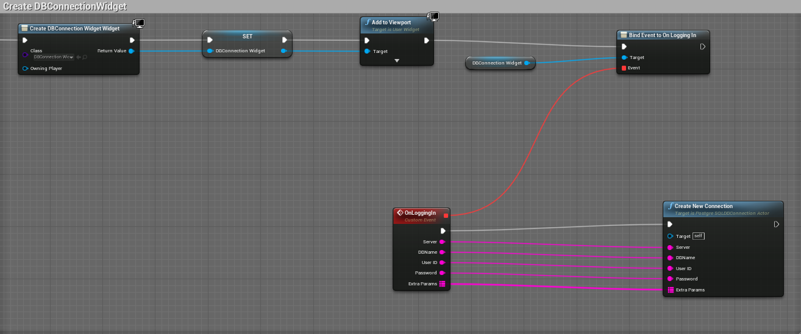

PostgreSQL Integration for UE4 Documentation
This documentation lets you quickly get started with connecting your PostgreSQL Server with your Unreal Projects, via Blueprints.
Getting Started
To get started, ensure that the plugin is installed, by visiting the Plugin Window, as shown below:
If you are unsure regarding how to work with PostgreSQL, you can visit this link to get yourself started with PostgreSQL. https://dev.PostgreSQL.com/doc/postgresql-getting-started/en/.
When you download the plugin from the Launcher, this is installed as an Engine plugin, so in order to view its contents you need to enable Show Engine Content from the View Options.
Prior to Initializion of any connection to your PostgreSQL server, you need to place an instance of PostgreSQLDBConnectionActor Class in your level. This is an actor class responsible for asynchronous connection and communication with your database. You will get an instance of this class, BP_PostgreSQLDBConnectionActor, in your plugin content directory, along with other Widget Blueprints, in the respective folders, as an excellent starting point.
Setting up Database Connection
Before you begin writing our SQL queries and executing them in your database, you first need to establish a connection with your server.
Creating New Connection
Once you have the instance of PostgreSQLDBConnectionActor placed in your level, you need to get a reference of it whenever you want to create a new connection, and then call the function CreateNewConnection. The function CreateNewConnection takes the necessary parameters that your server is going to need , and asynchronously request for the connection to be established.
| Input Parameter | Description |
|---|---|
| Server | This parameter takes your server address. |
| DBName | This parameter takes the name of your database. |
| UserID | This parameter takes your login ID. |
| Password | This parameter takes your login Password. |
| Extra Params | Name-Value Pair Map for additional parameters that your database server might need. |
Since the process is asynchronous, you need to receive the notification on connection completion, and whether the connection is successful or failed. This will allow you to proceed to the next step, which includes writing queries and passing them from UE4 to your database server.
When the State of your connection chages, you will be notified via the event OnConnectionStateChanged. You add this event listener in your PostgreSQLDBConnectionActor Blueprint.
| Output Parameter | Description |
|---|---|
| Connection Status | This is a boolean value stating whether the connection is successful, or failed. |
| Error Message | This parameter contains the error returned while trying to connect to the server, if the connection status is failed. This will be empty for successful connections. |
Closing Connection
To close your database connection at any point of time, get the reference to your PostgreSQLDBConnectionActor, and call the function CloseConnection. This will terminate and free your current connection, and for further Database operations, you need to reestablish your connection.
Writing SQL queries
Once the connection is successfully extablished, you can now start forming your SQL queries. Forming queries can be categorized in two types, queries that modify data to the database (INSERT, UPDATE, DELETE), or the queries that fetch data from the database (SELECT). We will discuss these two categories one by one.
Update Queries
To asynchronously modify data in your table , call the function UpdateDatafromQuery.
| Input Parameter | Description |
|---|---|
| Query | This is the query string that you need to create for making changes to your database, like creating a table, inserting, updating or deleting data from your table, or dropping table entirely. |
After calling the Update function , you need to add the event listener, OnQueryUpdateStatusChanged, to get the notification when your update query has been processeed. The event listener will give you the appropriate response it receives from server, with an error message if the query execution has failed.
| Output Parameter | Description |
|---|---|
| Is Successful | Returns true if the Query is successfully executed, false otherwise. |
| Error Message | Returns the error message, if the Query execution is failed, otherwise returns an empty string |
Select Queries
To asynchronously select data from your table , call the function SelectDatafromQuery.
| Input Parameter | Description |
|---|---|
| Query | This is the query string that you need to create to select data from your table, and retrieving the resulsets. |
Just how you added an event listener for your update query , you also need an event listener, OnQuerySelectStatusChanged, to receive the notification when your select query has been processeed, along with the desired resultsets.
| Output Parameter | Description |
|---|---|
| Is Successful | Returns true if the Query is successfully executed, false otherwise. |
| Error Message | Returns the error message, if the Query execution is failed, otherwise returns an empty string |
| Result by Column | This will return an array of structured variable called PostgreSQLDataTable. This represents a column in the table and contains two properties, ColumnName and ColumnData. |
| Result by Row | This contains an array of structured variable called PostgreSQLDataRow. This structure contains an array of string that represents values of an entire row. So the number of elements in this string array equals number of columns, and number of elements in the Result by Row array equals number of rows in the output of the Select query. |
Below images display an example of how we can use Result By Row and Result By Column structures to store and display selected data retrieved from the server to our UE4 UI, as part of UMG widget.